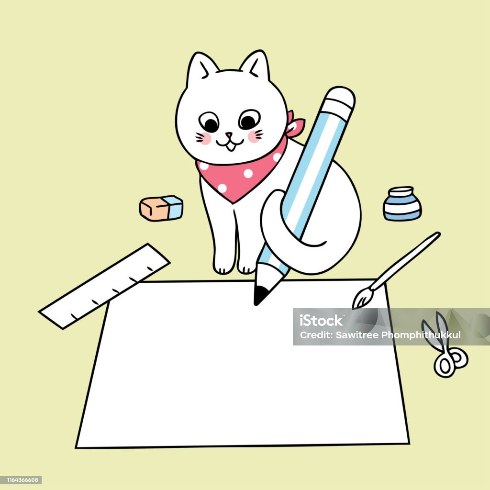
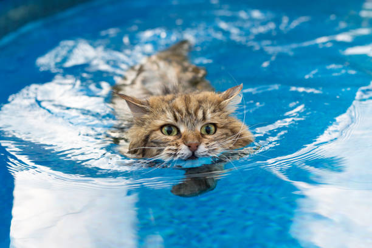

Konten Utama
* Hobi pertama saya adalah memasak, saya suka masak karena saya suka menonton tiktok yang menunjukan tutorial membuat kue atau cemilan ringan, dan akhirnya saya mengikutinya dan jika masakan itu berhasil bisa membuat hati saya senang.
* Hobi kedua saya adalah mendengarkan musik, menurut saya kalo saya lagi di kondisi sedih lalu saya mendengarkan musik yang happy saya juga akan merasakan happy.
* Hobi ketiga saya adalah fotografi, saya suka sekali foto foto langit atau bahkan tumbukan, karna menurut saya itu bisa bikin mata jadi rileks karna melihat keindahan ciptaan tuhan.
* Hobi ke empat saya adalah menulis, saya sangat suka sekali dengan menulis, dan jujur saya itu orangnya tidak suka membaca tetapi suka menulis, seperti cerita karangan yang saya buat, ataupun curhatan saya yang sedih dan senang.
* Hobi terakhir saya adalah berenang, sebenarnya saya tidak jago bahkan tidak bisa berenang, tetapi menurut saya dengan saya main air di kolam renang itu sangat menyenangkan dan membuat badan juga sehat.